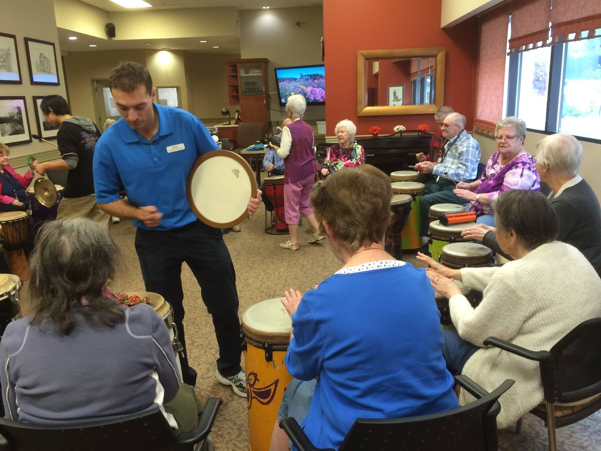

Home / Seniors & care homes
Edmonton, Alberta
Drum Circles for Seniors & Care Homes in Edmonton
Interactive rhythm and music circles for residents and staff — accessible, facilitated, and adapted to your group.

Seniors & care homes
Rhythm for residents and staff
Drum circles for seniors and care homes, for residents and staff. We serve diverse populations — from the newly born to the dying — with developmentally appropriate, exciting, uplifting and interactive events.
- Everyone can play seated, including from a wheelchair.
- We adapt for hearing aids, mobility and sensory needs.
- The volume is facilitated the whole way through, so we can keep it soft for care homes or anyone sensitive to sound.
- Inter-generational work.
- No drumming experience needed.
Care homes & seniors' organizations we've worked with
- Shepherd's Care Foundation
- Norwood – CapitalCare
- Allen Gray Care Center
- Lions Senior Center North
- Edmonton Pilgrims Hospice
- Edmonton Seniors Alliance Greater Edmonton
What the research suggests
- Older adults. Research suggests making music together, percussion included, supports mood, confidence and a sense of belonging in later life. Hallam & Creech, 2016
- Care staff. Research suggests a short group drumming program reduced burnout and improved mood in long-term care staff. Bittman et al., 2003
These are mostly small studies of group music-making, not studies of our sessions. Our circles are for wellness, connection and fun. They aren’t therapy or counselling, and they don’t replace professional mental health care.
Call us today for a consultation
Tell us about your group and your event — we'll shape the circle around it.
More from drumAdrumDRUM